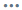
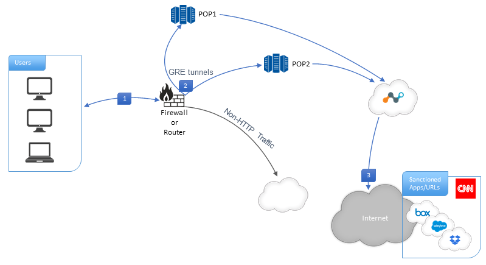

GRE
Generic Routing Encapsulation (GRE) is a tunneling protocol for encapsulating packets inside a transport protocol. A GRE tunnel functions like a VPN but without encryption; it transports packets from one endpoint to another endpoint. A GRE capable router, like Cisco or Juniper, encapsulates a payload packet inside a GRE packet, which it then encapsulates in a transport protocol, such as IP.
GRE is ideal for steering HTTP and HTTPS traffic to the Netskope cloud. The Netskope GRE gateway validates the source IP of the tunnel as a known IP address which must be configured in the Netskope UI.
Prerequisites
To use GRE:
Configure your source device to establish the GRE tunnel. Refer to your router (or firewall) documentation for specific configuration instructions.
Configure your firewalls, if any, to allow the GRE tunnel. If your firewall has an ACL blocking inbound connection, configure a rule to allow GRE traffic. Refer to your firewall documentation for specific configuration instructions.
HTTP and HTTPS traffic (typically on ports 80, and 443, but Netskope also supports custom ports) for the GRE (or IPSec) tunnel. Do not send any other traffic through these tunnels.
Note
Netskope negotiates HTTP/2 for all domains if the origin server supports it; otherwise, we fallback to HTTP 1.1. All other traffic will continue to leverage HTTP 1.1. In addition, the Netskope Client, GRE/IPSec, and iOS access methods are fully supported. The protocol change is completely transparent to users, no configuration is required by admins. Contact Support to enable this feature in your account.
If your source peer network uses NAT based on an endpoint IP address, the Netskope GRE service will observe only one IP address, and that will impact GRE load balancing and performance. Your source peer network should not NAT an endpoint IP address.
Download the Netskope root certificate to provision on the end-user devices. Get the Netskope root certificate from: Settings > Manage > Certificates.
Tip
If the Netskope Client is installed on your end-user devices, you do not need to provision the Netskope root certificate.
Ensure you have a Netskope Secure Web Gateway license, which enables GRE in your tenant.
The Maximum Segment Size (MSS) should be configured to account for GRE headers on the WAN interface. Not setting MSS could result in a negative impact on performance.
Workflow
The primary steps to configure GRE include:
Configure GRE in the Netskope UI.
Configure the GRE tunnel from the source device so that a primary and a failover exists. You can configure as many GRE tunnels as needed from the sites that you tunnel traffic from. Each tunnel supports up to 1 Gbps throughput.
Install the Netskope Client or provision the Netskope root certificate on devices.
Choose steering/identity options.
Configure GRE in the Netskope UI
Add the IP addresses of your routers/firewalls in the Netskope admin console and copy Netskope POPs IP addresses to establish GRE tunnels on your devices. Netskope recommends having two tunnels for each egress location in your network.
Go to Settings > Security Cloud Platform >Traffic Steering > GRE.
Click New GRE Configuration to register your devices.
Enter a name for the tunnel in the Configuration Name field.

Enter the source peer IP address (exit public IP) of your router/firewall that Netskope will receive packets from. Netskope identifies traffic belonging to your organization through your router/firewall IP addresses.
Click Save and View POPs. Copy the Netskope points of presence (POP) IP addresses for the two locations closest to you. You will need this information to establish GRE tunnels on your devices.

After a tunnel has been established on your devices, the tunnel appears in the table on the GRE page. The table shows the configuration name, source peer, Netskope POP(s), user traffic status, keepalive status, and throughput in kilobytes per second (Kpbs). The user traffic status types are Seen and Unseen.
Click on a tunnel name to edit the GRE tunnel configuration. Also, click the  icon to the right of the tunnel listing to edit, enable, disable, or delete the tunnel.
You can also search for tunnel configuration using the filters for source peer, Netskope POP, User Traffic Status, and Keepalive Status.
Configure GRE Tunnels on Source Device
Netskope recommends configuring two GRE tunnels from your location to the Netskope POPs. This ensures high availability for tunneling traffic through GRE. Here is an example of how to configure your GRE tunnels:
|  |
Configure your router/firewall for GRE. Refer to Deploying GRE Tunnels and Monitoring GRE Tunnels below for specifics.
Configure the GRE tunnels to direct traffic to the Netskope POPs.
Traffic is directed through the Netskope cloud.
Deploying GRE Tunnels
Create two GRE tunnels for each egress location in your network. Having two GRE tunnels ensures that connectivity is maintained in the event of an outage on the primary tunnel. The second GRE tunnel takes over until the first GRE tunnel gets restored. The second tunnel should be connected to a different Netskope data center than the first one.
Calculate the maximum transmission unit (MTU) and maximum segment size (MSS) needed for your GRE tunnels based on the configuration of your WAN interface. If the MTU is not properly calculated then higher fragmentation occurs and impacts performance.
Here is a sample MTU and MSS calculation for a WAN interface that has 1500 bytes:
WAN Interface MTU = 1500
WAN Interface MSS = MTU (1500) - IP (20 bytes header) - TCP (20 bytes header) = 1460
GRE = 4 bytes header
GRE MTU = MTU (1500) - IP (20) - GRE (4) = 1476
GRE MSS = GRE MTU (1476) - IP (20) - TCP (20) = 1436
Important
Use policy-based routing so only web traffic is steered through ports 80 and 443 to the GRE tunnels.
Monitoring GRE Tunnels
Monitor your GRE tunnels to ensure failover between the primary and backup GRE tunnels. Enable GRE keepalives as a basic detection mechanism.
For Cisco routers, you can use IPSLA or keepalive on the Cisco tunnel interface to monitor the tunnels.
Keepalive on Cisco devices use a GRE packet with the source and destination IP addresses reversed to be sent as the inner payload from the source peer. The GRE destination relays the inner packet to indicate the tunnel is up.
For Juniper routers, you can use RPM or keepalive to monitor the tunnels.
Keepalive on Juniper devices use an ICMP packet with the endpoint’s inner IPs to be sent over the GRE tunnel. These inner IPs are allocated by Netskope so that Netskope GRE gateway can be configured to respond that the tunnel is up.
For high-availability, keepalive functionality enables GRE endpoints to failover to a backup tunnel if a response is not received. The Netskope GRE gateway sends back a keepalive response only if there are no health check issues with a tenant specific proxy.
If the Netskope GRE gateway does not observe any keepalive packet within a minute, then the tunnel probe status will be flagged as down, and the GRE service will update the keepalive status as Not Seen in the Netskope UI.
Traffic Steering and Identity Options
To steer traffic and identify users, use one or more of these method.
Install the Netskope Client for Root CA Distribution, User Identity, and User Notifications
Installing the Netskope Client is optional, but doing so facilitates the certificate distribution on devices and provides coverage for remote users. The Client provides user identification directly to Netskope and eliminates the need to implement authentication on the GRE tunnel.
We recommend installing the Client so it can send device and user info to the Netskope Cloud and show user-facing notifications that result from policy violations. To do this, go to Settings > Security Cloud Platform > Devices > Client Configuration and enable the feature Enable Device Classification and Client-Based End User Notifications when the Client is Disabled. When the Client detects a GRE tunnel, it disables the data tunnel (TLS tunnel) to the Netskope platform, but continues sending user identity to Netskope and facilitating user notifications on the endpoint.
Provision Certificates on Devices
Certificates only need to be provisioned on devices that do not have the Netskope Client installed. Get the root certificate from the Netskope UI and provision it on your devices. In the Netskope UI, go to Settings > Manage > Certificates to download the certificates. Check the product documentation for your devices to learn how to provision the certificates.
Use SAML Authentication
If you don't use the Netskope Client, you can use SAML to authenticate a user with your Identity Provider (IdP) before their traffic is tunneled via GRE. Use Netskope as an authentication mode to integrate with an IdP.
Enable Authentication
You can use SAML to authenticate a user to Netskope before their connection is allowed to traverse the GRE tunnel. Use Netskope as an authentication mode to integrate with an Identity Provider (IdP). This feature acts as an authentication module taking Netskope's framework and an IdP's auth assertion after authentication.
Go to Settings > Security Cloud Platform > Forward Proxy > Authentication.
Click Enable Authentication.
Click the Enabled checkbox to turn this feature on.
Click Create New for SAML based authentication. The Add SAML Account window opens.
Configure these parameters:
Name: Enter a name identifying the account.
IdP URL: Contact your third party Identity Provider and add the unique IdP login URL in this field.
IdP Entity ID: Type your globally unique name for your SAML entity.
IdP Certificate: Copy and paste the PEM format certificate of the third party IdP in this field. This is required by Netskope to validate the signature of the SAML assertion.
Alternate User ID Field: Netskope looks at the NameID field in the SAML assertion to get the user identity. If you would like to use another field for user identification, type the name of the SAML attribute in this field.
Group Attribute: Type your name:value pair to identify / describe your entities user group and role memberships.
Click Save.
Authentication Bypass Settings
You can specify domains, web categories, and network IP addresses for which user authentication is not required.
Click Edit and add comma-separated URLs to bypass. When finished, click Save.
 |
Note
Adding your IdP domains here are recommended.
Click Edit and add comma-separated URLs to bypass. When finished, click Save.
 |
Click Edit and search for source networks. For each of the networks found, you can choose to bypass based on User IPs or Egress IPs (just one, not both).
 |
If search does not locate the network you want to bypass, click +New to add it.
 |
Enter the IP address, IP address range, or CIDR netmask in the text field, and then click the adjacent + button. Multiple network locations can be added. After adding the network locations, click Next, enter a name, and then click Save Network Location.
Select User IP or Egress Source IP for each network location, and then click Save.
Troubleshooting
Certificate Issues:
If you are seeing a certificate error in browser, check the Netskope certificate on the browser, make sure the Netskope root certificate is installed on the end-user devices.
Connection issues:
If end-to-end traffic is not working:
Check if the GRE tunnel status to see if it is up on the exit router.
Check the tunnel interface counters to see if they are going up or not, which would indicate the transit of traffic.
If a tunnel is down, check to make sure the GRE/ICMP keepalives sent by the exit router is receiving the keepalive response back.
If a tunnel is down, end-to-end traffic should be working through the router's default-gateway.
If the tunnel is up, check the route-map configured to re-direct the traffic.
Make sure the firewall is allowing GRE traffic.
Make sure the router exit IP (public IP) is added to the GRE page from Netskope console (tenant UI).
Route map should ideally be configured to redirect port 443/80 over the GRE Tunnel.
Contact Netskope Support.
Performance issues:
Check the MTR against the Netskope GRE IP address. It should show RTT between your environment to the Netskope Cloud. It will also show packet drops.
Capture packets at the endpoint egress interface using Wireshark. It will show complete TCP statistics.
GRE device status:
Login into the source peer device to determine the GRE tunnel status. If the tunnel is down, there is high chance that the device is not able to communicate with Netskope GRE service, or this GRE node/site is not yet provisioned. Go to the Netskope GRE page to confirm.